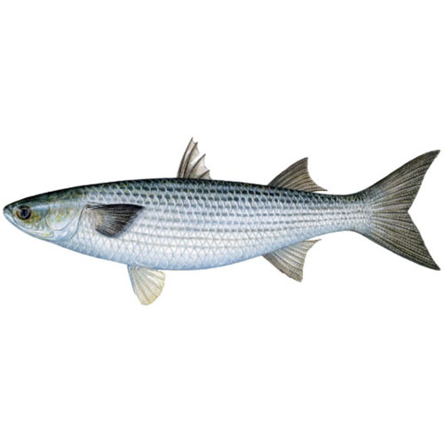
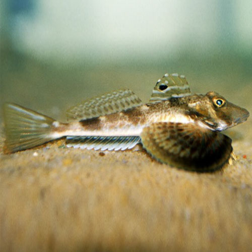

Killifish and Allies
Striped Killifish Fundulus majalis
- Males and females have different markings- males have more than a dozen vertical bars, females two to three dark stripes.
- Up to 18 cm long
Mummichog Fundulus heteroclitus
- Blunt snout.
- Silvery vertical bars.
- More likely in brackish marshes than freshwater or saltwater beaches, but can be found in all three.
- Up to 13 cm.
- Male and female shown.
Banded Killifish Fundulus diaphanous
- A freshwater species that will occasionally be found in salt marshes with F. heteroclitus.
- Narrower body, prominent bars.
Sheepshead Minnow rinodon variegatus
- Stocky build, blunt snout, mottled pattern.
- Common in weedy areas regardless of salinity.
- Females have a spot on the back of the dorsal fin.
- Up to 8 cm.
Silvery Schooling Fish
Silverside Menidia spp.
- One of the most common baitfish in our area.
- Long silver stripe down body.
- Longer body compared to bay anchovy (below).
- Up to 15 cm.
- Also called ‘spearing’ or‘shiners’.
Bay Anchovy Anchoa mitchilli
- Head and snout very short, large eye and mouth.
- Silver stripe down body.
- Often translucent body, especially in small specimens.
- Up to 10 cm.
Menhaden Brevoortia tyrannus
- Silvery, with pale yellowish fins.
- Adults and large young have a dark spot behind the pectoral fin.
- Sharp ventral side.
- Up to 35 cm.
- Also known as ‘bunker’.
Atlantic Mackerel Scomber scombrus
- Often bluish or greenish, with wavy bars that stop at the lateral line.
- No spots below bars.
- Up to 56 cm.

Striped Mullet Mugil cephalus
- Silvery.
- Each scale has a dark spot at the base (white mullet do not).
- Known for leaping when netted.
- Up to 90 cm, but more commonly less than 50 cm.
Herring

Atlantic Herring Clupea harengus
- Silvery, with greenish back.
- No spots.
- Up to 45 cm.
- Uncommon.
- Herring in this section easily confused.
Blueback Herring Alosa aestivalis
- Usually one small shoulder spot, silvery with a bluish back.
- Eye relatively small, about the same diameter as the distance from snout tip to eye.
- To 30 cm.
Alewife Alosa psuedoharengus
- Silvery, with greenish back. Usually one small shoulder spot.
- Eye large, diameter greater than the distance from snout tip to eye.
- To 30 cm.
Bluefish, Bass and Wrasse
BluefishPomatomus saltatrix
- Silvery, often greenish or bluish above.
- Deeply forked tail.
- Aggressive, with sharp teeth.
- Up to 110 cm.
- Juveniles less than 30 cm are often called ‘snappers’.
Striped BassMorone saxatilis
- Silvery, with 7-8 dark stripes on sides.
- Less evident in juveniles (shown).
- Two dorsal fins. Up to 150 cm.
BlackfishTautoga onitis
- Snout blunt, mottled vertical bars.
- Juveniles can vary in color from bright green to near black.
- Prefers rocky, vegetated areas and shellfish beds.
- 16 or 17 spines on dorsal fin.
- Up to 90 cm.
- Also known as ‘tautog’.
CunnerTautogolabrus adspersus
- Pointed snout.
- 18 spines on dorsal fin.
- Prefers rocky, vegetated areas and shellfish beds.
- Up to 35 cm.
- Also known as ‘bergal’.
Section 3
Sticklebacks
Fourspine SticklebackApeltes quadracus
- 4 to 5 dorsal spines; first 3-4 free, last spine attached to dorsal fin.
- Pelvic fins directly below pectoral fins. Usually mottled pattern, brown to black and silvery below.
- Up to 6 cm.
Threespine SticklebackGasterosteus aculeatus
- 3 dorsal spines; first 2 free, last spine attached to dorsal fin.
- Pelvic fins behind pectoral fins.
- Body often has bony plates on sides.
- Variably dark above, silvery on sides and bottom.
- Up to 10 cm.
Flat Fish

Summer FlounderParalichthys dentatus
- Large mouthed flounder, teeth visible.
- Mouth to the left of the eyes.
- Often has spots.
- Commonly called ‘fluke’.
- Up to 94 cm, but sizes around 30 cm much more common.
Windowpane Flounder Scopthalmus aquosus
- Body and fins covered with many spots.
- Mouth to the left of the eyes.
- Small specimens are thin enough to allow light through (hence the name).
- Also known as ‘sundial’ or ‘sanddab’.
- Up to 45 cm.
Winter Flounder Psuedopleuronectes americanus
- Small, dark flounder.
- Mouth small, to the right of the eyes.
- Often speckled.
- Up to 64 cm, but sizes in the 5 to 10 cm range common when seining.
Hogchoker Trinectes maculatus
- Squat little flounder, usually dark brown with bands across body.
- Occasionally has spots of brown on underside.
- Likes to stick to the sides of buckets when captured.
- Up to 20 cm, but usually much smaller.
Long Narrow Fish
American Eel Anguilla rostrata
- Greenish brown, muscular.
- Lower jaw longer than the upper.
- Slippery.
- Sometimes exceeds 90 cm.
- Found in all salinities.
Atlantic Needlefish Strongylura marina
- Long, toothy snout.
- Very slender and silvery.
- Dorsal fin set far back, even with anal fin.
- Up to 60 cm.
Northern Pipefish Syngnathus fuscus
- Usually brown, mottled, but no distinct pattern.
- Hard, boxy body.
- Small round tail fin.
- Lives in grassy areas in shallow water.
- Up to 30 cm.
Inshore Lizardfish Synodus foetens
- Has about 8 diamond shapes along the flanks.
- Wide, toothy mouth.
- Up to 45 cm.
Seabed Feeders
Northern Searobin Prionotus carolinus
- Body mottled above, spot at rear edge of dorsal fin.
- Broad pectoral fins resemble wings, six pectoral fin rays resemble legs.
- Well armored head.
- Up to 38 cm.
Oyster ToadfishOpsanus tau
- Body brownish, blotched with gold and dark brown.
- Well camouflaged.
- Small first dorsal, long second dorsal fin.
- Broad pectoral fins.
- Fringe of skin around head.
- Up to 38 cm.
Naked GobyGobiosoma bosci
- 9 to 11 broad dark bars behind head.
- No scales on body.
- Rests on bottom.
- Up to 6 cm.
Northern Kingfish Menticirrhus saxatilis
- Dark diagonal bars on grey to silver body.
- Long spines at front of dorsal fin.
- Up to 45 cm.
Disc Shaped Fish
Crevalle Jack Caranx hippos
- Juveniles are yellowish, with vertical bars, including bar through eye.
- Lateral line straight.
- Adults reach 150 cm, but juveniles typically caught on Long Island.
Permit Trachinotus falcatus
- Pelvic fin and front of anal fin orange.
- No stripes.
- Anal fin has three spines, first two detached.
- Adults reach 110 cm.
- Juvenile pictured here.
Butterfish Peprilus triacanthus
- Silvery.
- No pelvic fins.
- Second dorsal and anal fins almost reflections of one another.
- Up to 30 cm.
Lookdown Selene vomer
- Silvery, iridescent; often with yellow or brassy highlights.
- Body extremely compressed.
- Front of head very steep.
- Lobes at front of dorsal and anal fins long and trailing, streamer—like.
- Up to 30 cm.

Scup aka Porgy need latin name
Unusual Shaped Fish
Filefish Monacanthus hispidus
- Varied color, tan to greenish, with blotches throughout.
- Dorsal spine tall and barbed.
- Up to 25 cm.
Northern Puffer Sphoeroides maculatus
- Dark olive above, with many tiny black spots.
- Black bar between eyes.
- White below, no markings.
- Slightly prickly.
- Up to 36 cm.
- Also known as ‘blowfish’.
Striped Burrfish Chilomycterus schoepfi
- White to yellowish below.
- Thick blunt spines on squarish body.
- Up to 25 cm.
- Uncommon.